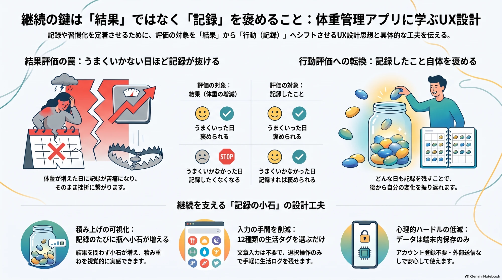

記録の小石：日々の体重と生活ログ
体重が増えた日も減った日も、記録すれば小石が一つ増える。結果ではなく「記録したこと」を褒める体重管理アプリです（iPhone向け）。

主な機能
- 記録：体重（必須）と体脂肪率（任意）に加え、外食・運動・早めに寝たなど12種類の生活タグから選んで記録
- グラフ：7日・14日・30日の表示で、実測値と7日平均を確認。生活タグも同じ時間軸に並ぶ
- 小石の瓶：記録が小石として瓶に積み重なり、今週・今月の瓶や過去の月の棚で続けた年月を振り返れる
- データ：アカウント登録は不要。記録は端末内に保存し、開発者のサーバーへ送らない
ご利用にあたって
生活タグと翌日の体重変化の傾向表示は参考情報であり、体重変化の原因を断定するものではありません。 診断・治療を目的としたアプリではありません。